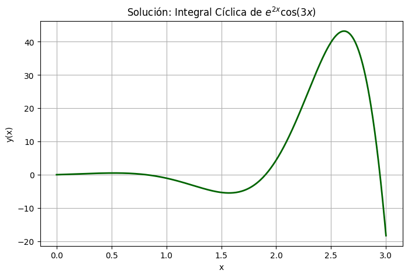
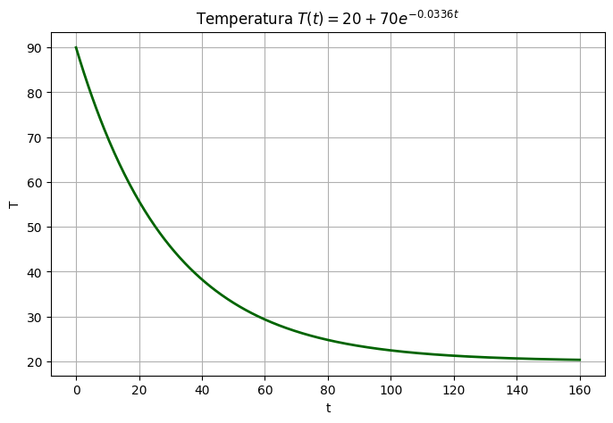
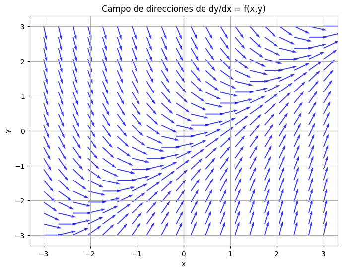
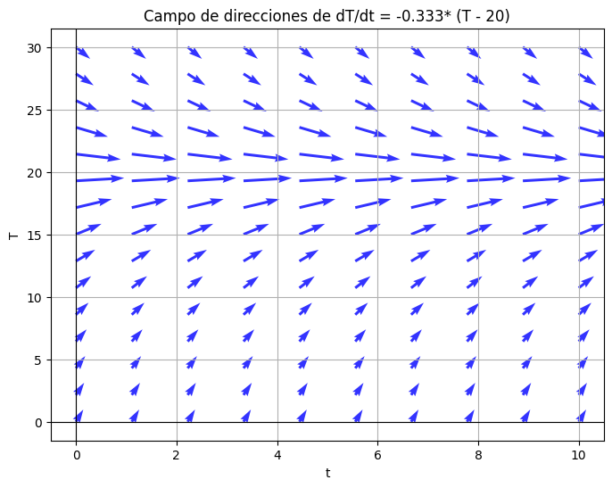

¡Bienvenidos a su primera sesión del curso de Ecuaciones Diferenciales (ED)! Antes de sumergirnos en métodos avanzados, debemos asegurar nuestros cimientos. Una Ecuación Diferencial es, en esencia, una ecuación que relaciona una función desconocida con sus derivadas.
Hoy trabajaremos con las formas más puras y fundamentales de ED de primer orden:
Objetivo de la sesión: Utilizar estas ecuaciones como vehículo para repasar intensamente técnicas cruciales de Cálculo Integral: Integración por Partes, Método Tabular y Fracciones Parciales (Caso 1: Factores lineales no repetidos).
Resolveremos 6 ejercicios. Los primeros abordarán el método por partes y tabular evaluando la forma \( y' = f(x) \), y luego pasaremos a las ED autónomas \( y' = f(y) \) para dominar las fracciones parciales.
Resuelve la ecuación diferencial: \( \frac{dy}{dx} = x e^{3x} \)
Solución:
Al ser de la forma \(y' = f(x)\), integramos directamente: \( y = \int x e^{3x} dx \).
Aplicamos integración por partes (\( \int u \, dv = u v - \int v \, du \)):
Sea \( u = x \implies du = dx \).
Sea \( dv = e^{3x} dx \implies v = \frac{1}{3}e^{3x} \).
Sustituimos en la fórmula:
$$ y = x \left(\frac{1}{3}e^{3x}\right) - \int \frac{1}{3}e^{3x} dx $$ por lo cual $$ y(x) = \frac{1}{3}x e^{3x} - \frac{1}{9}e^{3x} + C $$Resuelve el problema de valor inicial: \( y' = x^3 \cos(x) \) con \( y(0) = 1 \).
Solución:
La integral es \( y = \int x^3 \cos(x) dx \). Al tener un polinomio de grado 3 multiplicando a una trigonométrica, usaremos el método tabular (integración por partes sucesiva).
Construimos la tabla derivando \(x^3\) hasta cero, e integrando \(\cos(x)\):
| Signo | \(u\) y sus derivadas | \(v\) y sus integrales | Diagonal / Resultado |
|---|---|---|---|
| (+) | \(x^3\) | \(\cos(x)\) | |
| (-) | \(3x^2\) | \(\sin(x)\) | \(+x^3 \sin x\) |
| (+) | \(6x\) | \(-\cos(x)\) | \(-3x^2(-\cos x)\) |
| (-) | \(6\) | \(-\sin(x)\) | \(+6x(-\sin x)\) |
| (+) | \(0\) | \(\cos(x)\) | - \(-6(\cos x)\) |
Sumando los productos diagonales obtenemos la solución general:
$$ y(x) = x^3 \sin(x) + 3x^2 \cos(x) - 6x \sin(x) - 6\cos(x) + C $$Evaluamos la condición inicial \( y(0) = 1 \):
$$ 1 = 0 + 0 - 0 - 6(1) + C \implies C = 7 $$ por lo caulSolución particular: $$ y(x) = x^3 \sin(x) + 3x^2 \cos(x) - 6x \sin(x) - 6\cos(x) + 7 $$
Resuelve la ecuación diferencial: \( y' = y^2 - 4 \)
Solución:
Esta es una ED autónoma (\(y' = f(y)\)). "Separamos" las variables dividiendo entre la función de \(y\):
$$ \frac{dy}{y^2 - 4} = dx $$Integramos ambos lados. El lado izquierdo requiere descomposición en fracciones parciales (Caso 1: Factores lineales no repetidos):
$$ \frac{1}{(y-2)(y+2)} = \frac{A}{y-2} + \frac{B}{y+2} $$ Multiplicando por el denominador común: $$1 = A(y+2) + B(y-2) $$.Sustituimos e integramos: $$ \frac{1}{4} \int \frac{1}{y-2} dy - \frac{1}{4} \int \frac{1}{y+2} dy = \int dx $$ $$ \frac{1}{4} \ln|y-2| - \frac{1}{4} \ln|y+2| = x + C \implies \frac{1}{4} \ln\left|\frac{y-2}{y+2}\right| = x + C $$ Despejando \(y\) (usando propiedades de exponenciales): $$ \left|\frac{y-2}{y+2}\right| = e^{4x+4C} = K e^{4x} $$ $$ y-2 = K e^{4x}(y+2) \implies y - Ky e^{4x} = 2 + 2Ke^{4x} $$ Finalmente, a solución es: $$ y(x) = \frac{2 + 2Ke^{4x}}{1 - Ke^{4x}} $$
Resuelve la ecuación diferencial: $$\frac{dy}{dx} = y^3 - 9y $$
Solución:
Separando variables y factorizando el denominador: $$ \frac{dy}{y(y^2 - 9)} = dx \implies \frac{dy}{y(y-3)(y+3)} = dx $$ Planteamos fracciones parciales: $$ \frac{1}{y(y-3)(y+3)} = \frac{A}{y} + \frac{B}{y-3} + \frac{C}{y+3} $$ multiplicando por \( y(y-3)(y+3) \) se tiene $$ 1 = A(y-3)(y+3) + B(y)(y+3) + C(y)(y-3) $$
Al integrar resulta $$ -\frac{1}{9}\ln|y| + \frac{1}{18}\ln|y-3| + \frac{1}{18}\ln|y+3| = x + K $$ Multiplicando todo por 18 y usando propiedades de logaritmos: $$ \ln\left| \frac{(y^2 - 9)}{y^2} \right| = 18x + C_1 \implies 1 - \frac{9}{y^2} = C_2 e^{18x} $$ Finalmente, despejando \(y\) obtenemos la solución: $$ y(x) = \pm \frac{3}{\sqrt{1 - C_2 e^{18x}}} $$
Resuelve \( y' = e^{2x} \cos(3x) \) con \(y(0) = 0\).
Solución:
La forma de la ED es del tipo (y'=f(x)\). Entonces sólo se necesita integrar. Usaremos la fórmula directa para este tipo estándar de integrales por partes: $$\int e^{ax} \cos(bx) dx = \frac{e^{ax}}{a^2+b^2}(a \cos(bx) + b \sin(bx)) $$ Aplicando la fórmula con \(a=2, b=3\) se tiene : $$ y(x) = \frac{e^{2x}}{4+9}(2\cos(3x) + 3\sin(3x)) + C = \frac{e^{2x}}{13}(2\cos(3x) + 3\sin(3x)) + C $$ Usando la condición \(y(0)=0\) se tiene: $$ 0 = \frac{1}{13}(2(1) + 3(0)) + C \implies C = -\frac{2}{13} $$ Finalmente, la solución particular está dada por: $$ y(x) = \frac{e^{2x}}{13}(2\cos(3x) + 3\sin(3x)) - \frac{2}{13} $$ en la figura siguiente se muestra la gráfica de la solución.

Resuelve la ecuación diferencial autónoma: $$ y' = y^2 - 5y + 6 $$
Solución:
Factorizamos el lado derecho: $$y' = (y-3)(y-2) $$ Separamos variables: $$ \frac{dy}{(y-3)(y-2)} = dx $$ Proponemos $$ \frac{1}{(y-3)(y-2)} = \frac{A}{y-3} + \frac{B}{y-2} $$ Mutiplicamos por \((y-2) (y-3)\) se tiene $$1 = A(y-2) + B(y-3) $$
Integramos: $$ \int \frac{1}{y-3} dy - \int \frac{1}{y-2} dy = \int dx \implies \ln|y-3| - \ln|y-2| = x + C $$ $$ \ln\left|\frac{y-3}{y-2}\right| = x + C \implies \frac{y-3}{y-2} = K e^x $$ Despejamos \(y\): $$ y - 3 = K y e^x - 2K e^x \implies y(1 - K e^x) = 3 - 2K e^x $$ Finalmente, la solución es: $$ y(x) = \frac{3 - 2K e^x}{1 - K e^x} $$
Las Ecuaciones Diferenciales Autónomas y la integración por fracciones parciales son excelentes para modelar procesos termodinámicos.
La Ley de Newton establece que la tasa de cambio de la temperatura \(T\) de un cuerpo es proporcional a la diferencia entre su temperatura y la temperatura ambiente \(T_a\):
$$ \frac{dT}{dt} = -k(T - T_a) $$Problema: Una taza de café a 90°C se coloca en una habitación a 20°C. Después de 10 minutos, el café está a 70°C. Encuentra la función \(T(t)\).
Solución
La ED Autónoma a resolver es: $$ \frac{dT}{dt} = -k(T - 20) $$ Separando variables e integramos: $$ \int \frac{dT}{T-20} = \int -k dt \implies \ln|T-20| = -kt + C $$ Ahora despejando se tiene: $$T(t) = 20 + C_1 e^{-kt} $$ Al usar la condicion inicial \(T(0) = 90\), se tiene $$90 = 20 + C_1 \implies C_1 = 70 $$ Si usamos \(T(10) = 70\) resulta $$70 = 20 + 70 e^{-10k} \implies \frac{5}{7} = e^{-10k} \implies k = -\frac{1}{10}\ln(5/7) \approx 0.0336 $$ La temperatura en el tiempo está dada por: $$ T(t) = 20 + 70 e^{-0.0336t} $$ En la figura siguiente se muestra la gráfica de la solución. Observa que la temperatura del medio es asíntota

En ciertas reacciones químicas exotérmicas dentro de contenedores sellados, la temperatura acelera su propio crecimiento. Un modelo simplificado es el crecimiento cuadrático autónomo: \( \frac{dT}{dt} = k(T - T_a)(T_c - T) \), donde \(T_c\) es la temperatura crítica máxima antes de la explosión y \(T_a\) la temperatura del medio.
Problema: Asume \(k=1\), \(T_a = 20\), \(T(0)=30\) y \(T_c = 100\). Plantea la integral para resolver este modelo.
Solución
Dado el modelo con los valores \(k=1\), \(T_a=20\), \(T_c=100\) y condición inicial \(T(0)=30\):
\[ \frac{dT}{dt} = 1 \cdot (T - 20)(100 - T) \]
Reorganizamos la ecuación para dejar todos los términos que dependen de \(T\) a un lado y \(dt\) al otro: $$\frac{dT}{(T - 20)(100 - T)} = dt $$ Integrando ambos lados: $$ \int \frac{dT}{(T - 20)(100 - T)} = \int dt $$ Descomponemos el integrando del lado izquierdo: $$\frac{1}{(T - 20)(100 - T)} = \frac{A}{T - 20} + \frac{B}{100 - T} $$ Multiplicando cruzado para hallar los coeficientes \(A\) y \(B\): $$1 = A(100 - T) + B(T - 20) $$
Sustituyendo los valores: $$ \int \left( \frac{1/80}{T - 20} + \frac{1/80}{100 - T} \right) dT = \int dt $$ Sacamos el factor común \(\frac{1}{80}\) e integramos cada término: $$ \frac{1}{80} \left( \ln|T - 20| - \ln|100 - T| \right) = t + C_1$$ Aplicando propiedades de los logaritmos (\(\ln a - \ln b = \ln\frac{a}{b}\)) $$ \frac{1}{80} \ln\left| \frac{T - 20}{100 - T} \right| = t + C_1 $$ Multiplicamos por \(80\) ambos lados (\(C = 80C_1\)): $$ \ln\left| \frac{T - 20}{100 - T} \right| = 80t + C $$ Sustituimos \(t = 0\) y \(T = 30\): $$ \ln\left| \frac{30 - 20}{100 - 30} \right| = 80(0) + C $$ $$ \ln\left( \frac{10}{70} \right) = C \implies \ln\left(\frac{1}{7}\right) = C \implies C = -\ln(7) $$ Sustituimos \(C\) de vuelta en la ecuación: $$ \ln\left( \frac{T - 20}{100 - T} \right) = 80t - \ln(7) $$ Aplicamos exponencial \(e\) a ambos lados: $$ \frac{T - 20}{100 - T} = e^{80t - \ln(7)} = e^{- \ln(7)} \cdot e^{80t} = \frac{1}{7} e^{80t} $$ Despejando \(T\): $$ 7(T - 20) = (100 - T)e^{80t} $$ $$ 7T - 140 = 100e^{80t} - Te^{80t}$$ Finalmente $$ T(7 + e^{80t}) = 140 + 100e^{80t} $$ $$ T(t) = \frac{140 + 100e^{80t}}{7 + e^{80t}} $$
Un campo de direcciones es un bosquejo gráfico de pequeños elementos lineales (segmentos rectilíneos) trazados sobre una malla de puntos en el plano coordenado (x, y).
(x, y) está dada exactamente por el valor de la función f(x, y).Por ejemplo, al considerar la ecuación diferencial $$\frac{dy}{dx}=x-y$$ para determinar su campo de pendientes, se elige el punto \((a,b)\) entonces el segmento de recta tiene pendiente \(m=a-b\). De forma que un segmento de recta que pasa por ese punto y con la pendiente dada tiene la ecuación \(y=b+m(x-a)=b+(a-b)(x-a)\). En la figura siguiente se muestra el campo de pendientes de la ecuación diferencial

En el caso de un problema de enfriamiento con la ecuación diferencial $$ \frac{dT}{dt} = -0.333* (T - 20)$$ se tiene el campo de pendientes de la figura siguiente:

Utiliza ChatGPT, Gemini o Claude para reforzar tu comprensión del Método Tabular copiando el siguiente prompt:
Actúa como un profesor paciente de Cálculo Integral.
Quiero resolver la integral de x^4 * e^(-x) dx usando el método tabular.
No me des la respuesta final todavía. Primero, explícame cómo
construir las dos columnas principales (derivadas e integrales) y
cuándo debo detenerme. Luego, pregúntame cuál es mi resultado de
la tabla para ver si lo hice bien.
Demuestra tu dominio inicial de estos conceptos respondiendo el siguiente cuestionario.